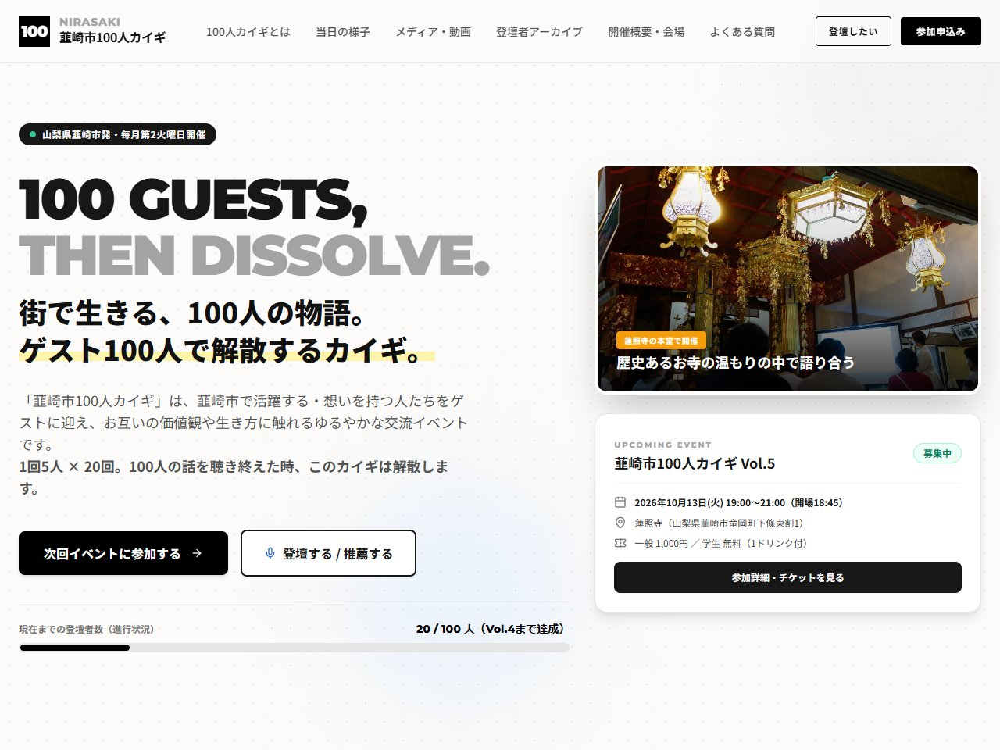
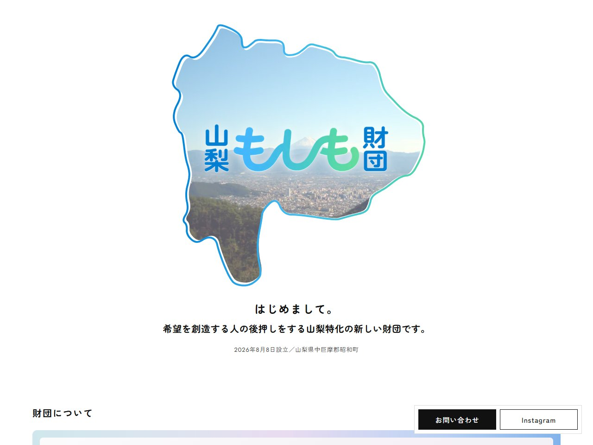
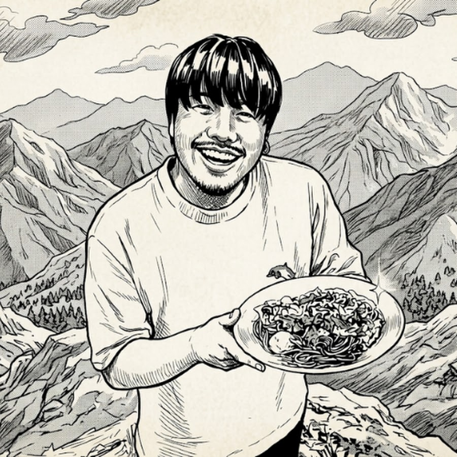
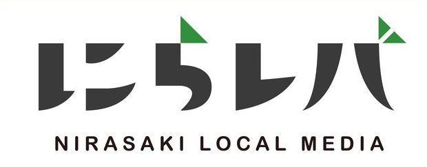

組織づくり・広告企画
たいどを、
整える。
きもちが乗らない日も、たいどが人を運んでくれる。
そんな職場のたいどを、代表といっしょに決めます。
きもちが乗らなくても、たいどでしめそう。
スタッフ3〜30人の、会社・お店・団体の代表のかたへ。
LISTEN聞く
代表とスタッフの「ほんとうは」と「しんどいところ」を聞きます。
THINK考える
崩れにくい、職場のたいどを考えます。
LEARN学ぶ
たいどの教育。自分でたいどを決められるようになる時間です。
SHOW出す
ホームページ、求人、SNS。外に向けるたいども、同じ考え方で。
CHECKたいど意識度チェック
あなたは、たいどに
どれだけ意識的ですか？
たいどは、気づく・決める・保つ・届ける、の4つの技術でできています。16問・3分で、いまのあなたの意識度と、次に伸ばす技術がわかります。
NOTICE
気づく
いま自分が、どんなたいどをしているかに気づく。
DECIDE
決める
場面ごとに、どうふるまうかを先に決めておく。
KEEP
保つ
気分が乗らない日も崩さない。崩れても、戻す。
REACH
届ける
相手に合わせて使い分け、お互いに乗りあう。
ISSUESこまりごと
こんなこと、
ありませんか。
- 会議で、誰もしゃべらない。
- 言い方ひとつで、ぎくしゃくする。
- 発信しているのに、伝わらない。
- 合わないお客さんや人ばかり来る。
きもちが乗らないのは、悪くない。たいどを、決めていないだけ。
気分が最悪の朝でも、仕事には行く。悪態はつかない。それも、立派なたいどです。
たとえば、こんなとき
工務店の2代目の社長／スタッフ12人
「先代のころは何も言わなくても回っていたのに、会議で職人さんたちと話がかみ合わない」
社内コミュニティづくり・1on1
美容室のオーナー／スタッフ6人
「新人が半年で辞めてしまう。教えているつもりが、言い方で傷つけているのかもしれない」
チームビルディング・研修・理念とクレドづくり
地域の団体の代表／スタッフ8人とボランティア
「想いはあるのに、ホームページやSNSで伝わらない。来てほしい人が来ない」
ブランディング・採用広報・SNS
よくある相談をもとにした例です。実在のお客さまではありません。
THINKINGたいどの考え方
たいどは、
技術。
たいどは、性格でも気分でもありません。学べる技術です。学べば、きもちが乗らない日の自分を守れる。チームに広がれば、それはマネジメントになる。きもちとたいどは、離れていていい。離れているときこそ、たいどが仕事を前に進めます。
NOTICE
気づく
いま自分が、どんなたいどをしているかに気づく。
DECIDE
決める
場面ごとに、どうふるまうかを先に決めておく。
KEEP
保つ
気分が乗らない日も崩さない。崩れても、戻す。
REACH
届ける
相手に合わせて使い分け、お互いに乗りあう。
たいどを学ぶことは、自分を守ることでもある。
WHY OUTSIDE外の人が入る理由
たいどは、
自分では見えない。
スポーツにコーチがいるように、たいどにも外から見る人がいると、早く身につきます。
01
鏡になる
自分のたいどは、自分ではいちばん見えにくい。外から映すと、くせや揺れに気づけます。
02
言いにくいことが、言える
社内では言いにくいことも、利害のない人になら話せる。スタッフの本音も、名前を出さずに集められます。
03
型にして、続ける
気づいたことを、場面ごとの型にして渡し、月に一度見直す。一度の研修で終わらせません。
GOALSめざせるゴール
たいどで、
こうなれる。
チェックの結果から、あなたに近いゴールを選んでいきます。たいどは技術なので、どこからでも伸ばせます。
きもちが乗らない日も、たいどで運べる
朝、会議、お客さんの前。気分に左右されない、自分のたいどの型を持てる。
1on1・コーチング／チームビルディング・研修
場面ごとのたいどが、決まる
お客さんの前、職場、はじめての人。ちょうどいいふるまいと、言うこと・言わないことが決まる。
理念・クレドづくり／チームビルディング・研修
職場で、乗りあえる
会議で意見が出る。言い方ひとつでぎくしゃくしない。お互いのたいどを、お互いがつくる。
社内コミュニティづくり／チームビルディング・研修
ひとことの自己紹介が、決まる
名刺交換で「それ、どういうこと？」と聞き返される、ひとこと。
1on1・コーチング／ブランディング
伝わる場所に、出せる
ホームページ、求人、SNS、店頭。合うお客さんと合う人が来る出し方。
採用広報・求人／ブランディング・ホームページ制作／SNS・発信の運用
ずれても、戻せる
相手からどう返ってきたかを月に一度見て、ずれたらたいどを直す。
SNS・発信の運用／1on1・コーチング（月に一度の見直し）
SERVICEしごと
よく知っている仕事を、
たいどから。
社内コミュニティも、研修も、採用も、ホームページも。やることは見慣れたものです。ちがうのは、どこから始めるか。仕組みやデザインより先に、場面ごとのたいどから始めます。
INSIDE中のこと
社内コミュニティづくり
イベントや仕組みより先に、集まったときのたいどを決める。
何を話していいか、どうふるまえば楽か。みんなの言葉で決めてから、場を開きます。
チームビルディング・研修
正解の作法ではなく、自分でたいどを決められるようになる。
新人研修、接客、会議の進め方。たいどの考え方を、チームで学びます。
1on1・コーチング
気分に左右されない、自分のたいどの型をつくる。
代表やリーダー、スタッフひとりひとりと。月に2回、話しながら整えます。
理念・クレドづくり
きれいな言葉ではなく、場面ごとのふるまいに落とす。
「お客さんが怒っているとき、うちはどうする？」まで決めた、使えるクレドに。
OUTSIDE外のこと
採用広報・求人
盛らずに、職場のたいどをそのまま見せる。
どんなふうに働いているか。合う人が来て、合わない人が来ない求人票と採用ページ。
ブランディング・ホームページ制作
ロゴや言葉より先に、お店のたいどを決める。
ロゴ、名刺、ホームページ。お客さんへのたいどが、そのまま伝わるかたちに。
SNS・発信の運用
何を言うかより、どんなたいどで言うか。
投稿の言い方、返し方、出す場所。続けられる発信の型をつくり、月に一度見直します。
料金は内容に合わせてお見積もりします。はじめの30分の相談は無料です。
VALUES4つのたいど
これまでやってきたことに、
もう出ていたたいど。
面白がって、聞く。
答えは、相手の話の中にある。100人カイギのインタビューや、にらレバの取材で、街の人の話を聞き続けてきました。
答えは配らない。問いを置く。
正しいたいどは教えません。本屋での対話の会や、中高生の居場所の問いコーナーで、ずっとそうしてきました。
その場で、かたちにして渡す。
話して終わりにしない。もとはエンジニア。決めたことは、紙1枚や、ホームページや、仕組みにして渡します。
慌てない。
場を急がせない。沈黙も、まとまらない話も待ちます。「慌てない」は、これまで人に言われてきた、わたしのたいどです。
PORTFOLIOつくったもの
つくったもの。

韮崎市100人カイギ
Webサイト・運営・インタビュー

山梨もしも財団
Webサイト

コッチコッチステーション
YouTube・撮影と編集

にらレバ
地域メディア・取材と執筆
リンクは新しいタブで開きます。
ABOUTわたし
たいどを整える
西村 直樹
組織づくり・広告企画
たいどで、
怒られてきました。
サッカー部では「態度が悪すぎる」と叱られました。そのくせ会社の面接に行くと「大物に見える」とよく言われる。同じたいどが、場面によって叱られたり、大物扱いされたりする。たいどって、なんなんだろう。
エンジニアとして働いていたころ、「こういう態度の人とは仕事したくない」と思うことが、はっきりありました。たいども、技術として扱えるんじゃないか。それが、コーチングを始めた出発点です。
いまは山梨県韮崎市で、本屋での対話の会の進行、100人カイギの運営、中高生の居場所での問いコーナー、地域メディアの取材を続けています。目指しているのは、お互いがお互いを乗せあう場が、あたりまえにあること。
- 学び
- 国際コーチング連盟（ICF）認定コーチングスクール修了／Google AI Specialization 修了
- 活動
- ヨムテツ（本屋での対話の会）／韮崎市100人カイギ／にらレバ／青少年育成プラザ Miacis／コッチコッチステーション
- 拠点
- 山梨県韮崎市（全国オンライン対応）
FAQよく聞かれること
頼む前に。
広告代理店とは、何が違いますか？
広告の枠を売って手数料をいただくことはしません。中で決めたたいどから、外に出すものをつくります。職場でのふるまいと、外で言っていることがずれないように。
マナー研修とは、何が違いますか？
正しい作法を覚えるのではなく、場面ごとのたいどを、自分たちで決められるようになることを目指します。気分に左右されない、自分たちの型です。
補助金は使えますか？
使える場合があります。くわしくは30分の相談で。
スタッフが話したことは、代表に伝わりますか？
誰が言ったか分からない形でまとめ、個別の発言は伝えません。3人より少ない人の話は傾向だけを書きます。録音は話す人の了承があるときだけ。詳しくは個人情報の扱いに。
効果は約束されますか？
売上や応募の数字は約束しません。約束するのは、決めた時間を使うことと、決めたことを1枚やかたちにして渡すことです。
少人数の会社やお店でも、頼めますか？
頼めます。スタッフ3人ほどから、30人くらいまでの職場を想定しています。
まずは代表ひとりで、こっそり相談できますか？
できます。はじめは代表とだけ話すことがほとんどです。スタッフに話を聞くかどうかは、そのあと一緒に決めます。
どのくらいの期間がかかりますか？
1回の研修やホームページづくりから、月に一度の伴走まで、内容に合わせて決めます。30分の相談で、いちばん小さな始め方を一緒に考えます。
遠くても頼めますか？
全国どこからでも、オンラインで対応しています。対面で伺うときの交通費は、別にご相談します。拠点は山梨県韮崎市です。
CONTACTといあわせ
質問を、
待っています。
「たいどって何？」の一言でも、「うちの会議、どうにかしたい」でも。はじめの30分は無料です。
- 01
LINEかフォームで、ひとこと。まとまっていなくて大丈夫です。意識度チェックの結果を送ってくださっても。
- 02
30分、話す。無料です。オンラインでも、韮崎の近くなら会ってでも。
- 03
必要なしごとを、いっしょに選ぶ。続けるかどうかは、そのあとで決めてください。
お問い合わせの内容は、返信と相談のご案内にだけ使います（個人情報の扱い）。LINE・Google フォームは新しいタブで開きます。フェイスブックからでも。